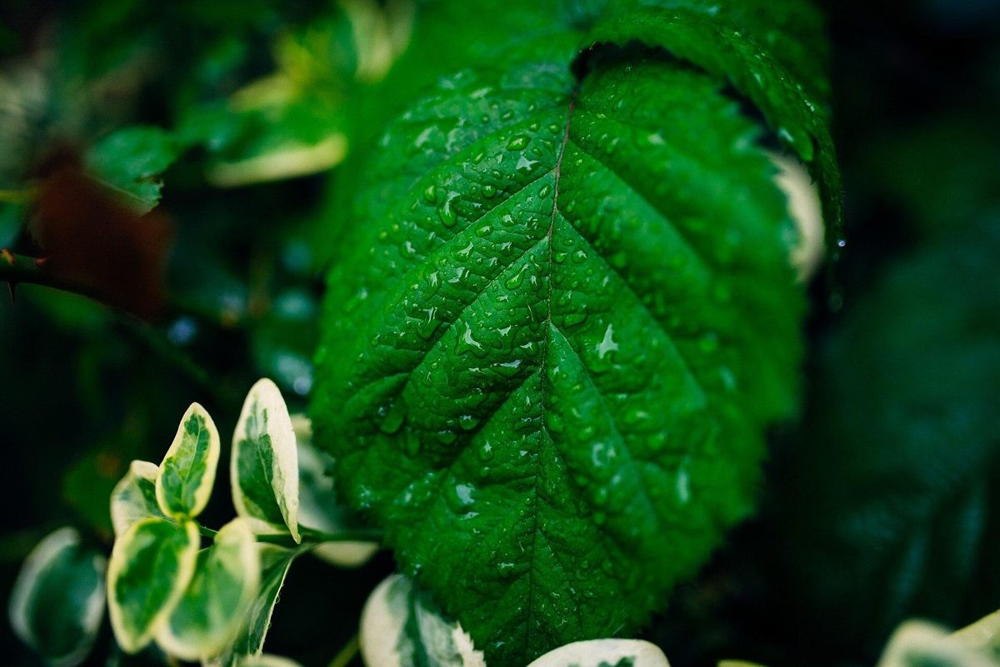
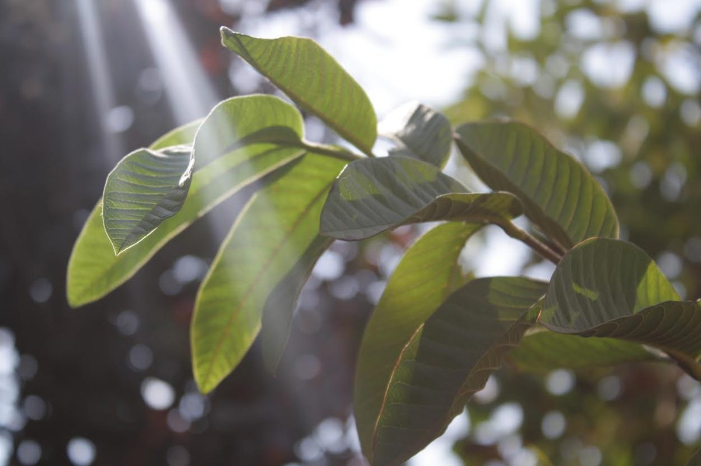
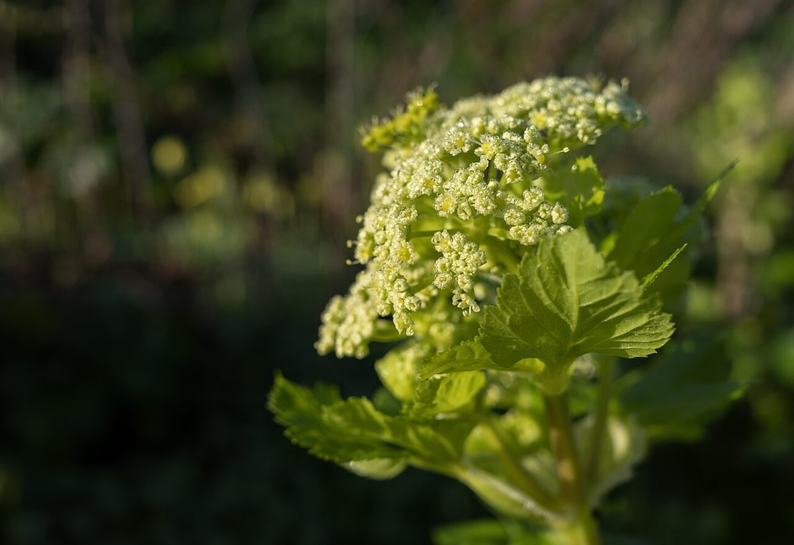
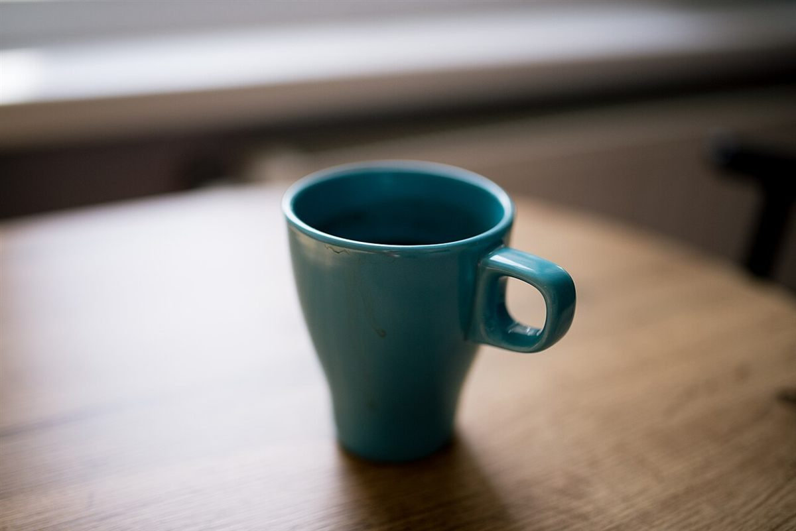

カフェ / 島根県松江市伊勢宮町
島根抹茶ラテ専門店ぐりはまっちゃ
島根県松江市のカフェ「島根抹茶ラテ専門店 ぐりはまっちゃ」のご案内ページです。メニューや営業時間は準備中。いまのところ確認できているのは、所在地とInstagramだけです。
ROLL 01 / 14 EXP.
現像待ちの一本(イメージ写真)
01 
層になった飲み物のイメージ 02 
葉のしずく(スロベニア) 03 
水滴の葉 04 
逆光の葉 05 
しずくの花(ポルトガル) 06 
窓辺(米国) 07 
白いカップ 08 
青緑のマグ 09 
窓辺のカップ 10 
立ちのぼる湯気 11 
灰色のカップ 12 
観葉植物 13 
シダの葉 14 
透明な器
横にスクロールできます。写真はお店のものではなく、国外または撮影地不明のフリー素材です。
制作側の連想
世界のぐりはま、現像待ち
Instagramのアカウント名に「世界の」とあることから、制作側は、世界のあちこちで撮られた写真をフィルム一本に並べるイメージを思いつきました。まだ何が写るか分からない「現像待ち」は、メニューや営業時間が準備中の今の状態にも重なります。これは制作側の連想で、お店の理念・由来とは無関係です。
ご案内
確認できていること
| 所在地 | 〒690-0006 島根県松江市伊勢宮町501-15 |
|---|---|
| 電話 | なし |
| 営業時間 | 準備中 |
| 定休日 | 準備中 |
| ご予約 | 準備中 |
| 駐車場 | 準備中 |
| SNS | Instagram @sekainogurihama |